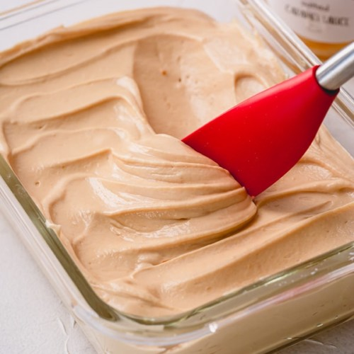
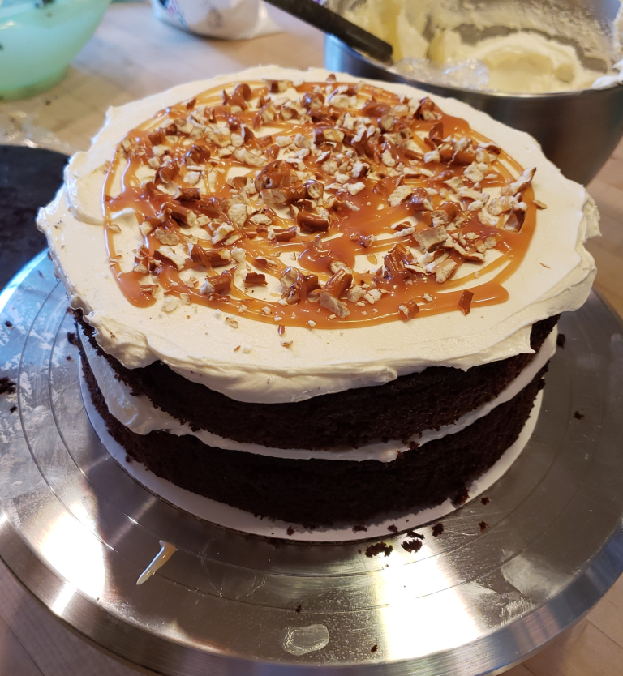
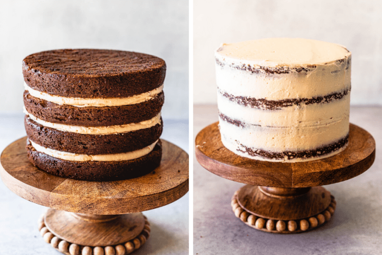

Today, we’re going to be baking what I’d consider a ubiqituously suave and luscious
Salted Caramel Chocolate Cake, perfect for all events
regardless of size or formality. Due to the delicacy of the baking process, this page will
encapsulate all the challenges and processes in simplified steps so that you can
focus less on stress and more on your savory results! Below, you can expect to find
a list of:
Ingredients
Precise directions
A table for heating instructions and necessities
Various images of the baking process
Links to recipes that may slightly differentiate outside of the glaze or Fudge Truffles illustrated
in the image above

Salted Caramel Buttercream has a nice consistency and weight for
layering on the cake

Layering allows for many options depending on glaze selection and
additional treats like pretzels or Fudge Truffles
To render the most comprehensive recipe due to the varying baking, assemblage methods,
and ingredient accompaniments, I utilize a combination of two recipes throughout the
baking process. In the first recipe,
Camila on the site pies & tacos
primarily highlights the glazing process and includes rationale for many of the
instructions when baking the cake; in the second recipe, the
basil & Buttercream team
sectionalizes the cake into different recipes and offers additional instructions
for chocolate ganache if desired.
While the caramel sauce applied throughout can be store-bought, both recipes simplify
the cooking process for making delicious homemade servings. Therefore, the ingredients
and instructions both account for this, but store-bought caramel sauce still works perfectly
when added to the cake during glazing. The majority of the subsequent sections will
reference Camila’s recipe, yet any recipes and directions for chocolate ganache will
be in reference to the basil & Buttercream team’s recipe.
Chocolate Cake
1 1/2 cups all-purpose flour (183 grams, 5.4 oz)
1/3 cup unsweetened cocoa powder (39 grams, 1.38 oz)
1 1/2 teaspoon baking powder
1 teaspoon baking soda
3/4 teaspoon fine sea salt
1/2 cup unsalted butter room temperature (113 grams, 4 oz)
1 cups sugar (200 grams, 7 oz)
2 eggs
2 teaspoons vanilla extract
2/3 cup milk (157 ml)
2/3 cup hot brewed coffee read notes* (157 ml)
Salted Caramel Sauce
2 cups sugar (400 grams, 14 oz)
1 cup heavy cream (240 ml)
12 tbsp unsalted butter (170 grams, 6 oz)
1 tsp kosher salt
Salted Caramel Buttercream
1 cup caramel sauce from the recipe below, or use store-bought
6 cups powdered sugar (750 grams, 26.46 oz)
2 cups unsalted butter room temperature (453 grams, 16 oz)
1 tsp vanilla extract
1/2 tsp salt or more to taste
Chocolate Ganache
4.5 ounces semi-sweet, milk or dark chocolate finely chopped
3 ounces heavy cream
Heating Instructions
Given that some of the ingredients need to be heated, you can find a table
below that elucidates heating instructions for these individual items. These heating
steps can likewise be done at the same time to reduce the overall prep time and
maintain better consistency regarding when the items are applied to the chocolate
cake.
Food
Heating Instructions
Chocolate Cake
Preheat the oven to 350℉. Spray three 6-inch round cake pans with cooking spray and line
with parchment paper
Salted Caramel Sauce
Place the sugar, water and corn syrup in a sauce pan. Place over high heat and stir until the
sugar begins to dissolve
Chocolate Ganache
In a small sauce pan over medium heat, bring cream just to a boil
We want to bake the chocolate cake at 350℉ since any other temperature may
reduce rigidness needed to support the Fudge Truffles on top or potentially burn the
cake. Moveover, if any sugar is still crystallized in the salted caramel sauce, we need
to attempt to mix the sauce well while maintaining viscosity or pour the sauce through a filter
to catch this residing sugar. Lastly, boiling for the chocolate ganache indicates any
bubbling on the surface of the cream.
Directions
These directions are also sectionalized to match the ingredients. You probably want to
pay attention to some steps beforehand since assemblage may be time sensitive with
glazing that could soak into the layering or ingredients that need to be heated.
Chocolate Cake
Preparation
Pre-heat oven to 350℉
Butter 4-6” cake pans and place a parchment paper circle in the bottom of pans. Butter
parchment. You can also use spray oil instead. Set aside
Sift together the flour, cocoa powder, baking powder, baking soda, salt, and espresso powder, if
using it instead of the coffee. Set aside
Cream the butter at medium-high speed for 1 minute
Add sugar slowly, cream for another 2 minutes
Add eggs to the mixture, one at a time, scraping the bowl in between and making sure the first
egg is incorporated before adding the second one
Add vanilla extract and mix
Slowly add milk, mix to combine
Pour dry ingredients over wet mixture
Fold with a spatula slowly, until ingredients are just combined
If you see big clumps of cocoa powder, you can use the whisk to try to gently smooth the batter
out
Once batter is incorporated, pour hot coffee in the bowl. Whisk until combined
Pour batter evenly onto baking pans
Baking
Bake in pre-heated oven for 15-20 min. After the 12 minute mark, keep checking regularly,
because you don’t want to burn your cakes or over bake them. Remove them from the oven
once a
toothpick comes our clean once inserted in the cake
Once you remove it from the oven, wait 10 minutes, flip cakes onto a cookie cooling rack and let
cakes cool
Once cool, wrap each layer individually in plastic wrap and refrigerate until ready to use. I
like to leave my layers in the fridge for quite a bit so they can firm up and make it easier to
assemble and decorate the cake
Salted Caramel Sauce
Place the sugar in a medium to large saucepan. Don’t use a small pan for a couple of
reasons: so
that the sugar has an easier time melting evenly, and so that the caramel doesn’t bubble
up out
of the pan once you add the cream and butter at the end
Bring to a boil over medium heat. Stir constantly to help the sugar melt evenly
As soon as the sugar melts entirely, it will be amber color. At this point, remove it
immediately from the heat
Add the cream and salt. Be careful. The mixture is going to bubble up to the top, so be careful
not to get burnt. After a second, it will subside, and you can whisk mixture
Whisk until combined
Add the butter. Again, mixture will bubble up, so be careful
Whisk until combined
Bring mixture to a quick boil, while constantly whisking
Let it boil for a few seconds, literally a few seconds, just until the sugar re-melts. Remove
from the heat
Wait a couple of minutes until caramel cools slightly. If you notice there are still a couple of
pieces of crystallized sugar that haven’t melted again, just use a strainer to pour the
caramel
into a jar
After pouring the caramel into a glass jar, or heat-proof container, let it cool completely at
room temperature

Here, we can see the Salted Caramel Buttercream being layered onto
the outside of the cake. This assists with crumb coating and offers a nice elegant appearance
that contrasts well with the caramel drip.
Salted Caramel Buttercream
First make sure the Salted Caramel Sauce is completely cool down, but not cold from the fridge.
If the sauce is warm, it will melt the butter from the frosting, and if it’s cold it will
lump
up
It has to be at room temperature
Sift the powdered sugar and set it aside
Cream the butter at medium high speed for 3 minutes, until very fluffy
Add the sifted powdered sugar to the butter and mix on low to combine
Add the caramel and raise the speed to medium high, and cream for a couple of minutes, until
fluffy
Add the salt and the vanilla extract
If the buttercream is too runny, add more sifted powdered sugar to adjust the consistency. And
if the buttercream is too stiff, add a teaspoon or so of water or milk to thin it out
Chocolate Ganache
In a small sauce pan over medium heat, bring cream just to a boil
Remove from heat and pour over chocolate. Let stand for 5 minutes without stirring
Stir with whisk until smooth. Let cool to room temperature
Assembly
Place one cake layer on top of a cake plate
Transfer some of the buttercream to a piping bag, leaving the remaining buttercream covered so
it doesn’t dry up
Spread a very thin layer of buttercream on top of the first cake layer. This will help the
caramel sauce not soak into the cake
Pipe a ring of frosting around the edges of the first layer
Pour about 1/4 cup of caramel sauce in the middle of the cake
Spread a thin layer of buttercream on the bottom of the next cake layer
Place it on top of the caramel filled cake layer
Spread a thin layer of buttercream on the cake. Then pipe a ring of frosting around, and fill
with caramel sauce
Repeat until you reach the final cake layer, remembering to always spread a layer of buttercream
on both sides of the cakes, to prevent the caramel sauce from soaking into the cake
Spread a thin layer of frosting around the whole cake and smooth it out
Place the cake in the fridge and let the cake cool for about 30 minutes
This process is called crumb coating, and it helps to seal the crumbs of cake in, so they
don’t
show on the final layer of frosting
Remove the cake from the fridge and apply a thick coating of frosting around the cake. Use a
spatula to smooth it out as best as possible
Place the cake back in the fridge until very cold, for at least 1 hour
Then you can begin to drip the caramel down the sides of the cake
I placed the caramel in a piping bag. You can place the caramel in a piping bag, or use a spoon,
or simply pour the sauce on top of the cake
I usually test out a couple of drops of caramel on the back of the cake to see if they are
dripping nicely and steadily before pouring the caramel drip on the whole cake
If the caramel is too runny, I’ll place it in the fridge for 5 minutes or so. And if the
caramel
is too thick, I will microwave it for 3 to 5 seconds to thin it out slightly
Place the cake back in the fridge for about 2 hours to let the caramel drip dry before piping
anything on top of the cake
Other Notes
Coffee in the cake: Always feel free to substitute the hot coffee for hot water.
You
could also add 1 teaspoon of espresso powder to the dry ingredients if that’s the case, or
simply go
without and use just the hot water. I have made this cake many times without coffee, using water
instead, and it turned out fine. The coffee is simply used to enhance the chocolate flavor and
richness, but not completely mandatory.
Caramel: If using store-bought caramel sauce, you will need 2 to 2 1/2 cups of
caramel for the filling, for the frosting, and for the caramel drip.
Salt: Leave out the salt from the recipe for regular caramel, or increase the
amount
of salt if you like it really salted. Cinnamon: a little sprinkle of cinnamon in the frosting
(about
1/4 tsp) will go a long way here and really add a lot of depth to the flavors of this cake.
Truffles: I topped the cake with these Caramel Fudge Truffles. They are super
easy
to make.
Related Recipes
In this section, you can find some additional recipes for salted caramel chocolate cake as well as
a few other desserts. Every link similarly includes ingredients and directions if
you’re curious to try your hand after taking a peek: